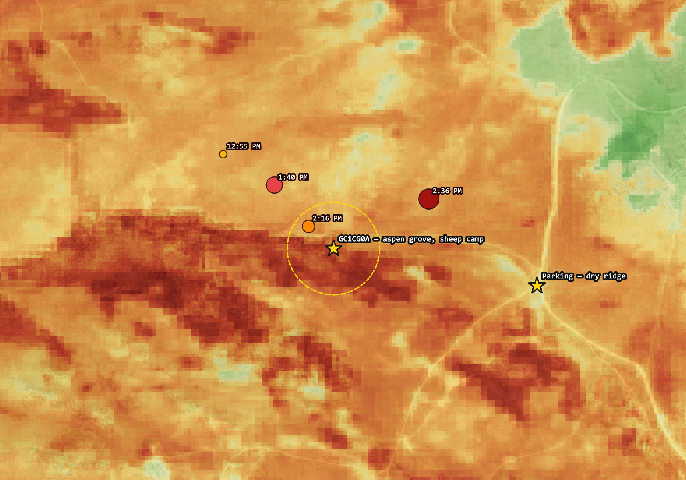
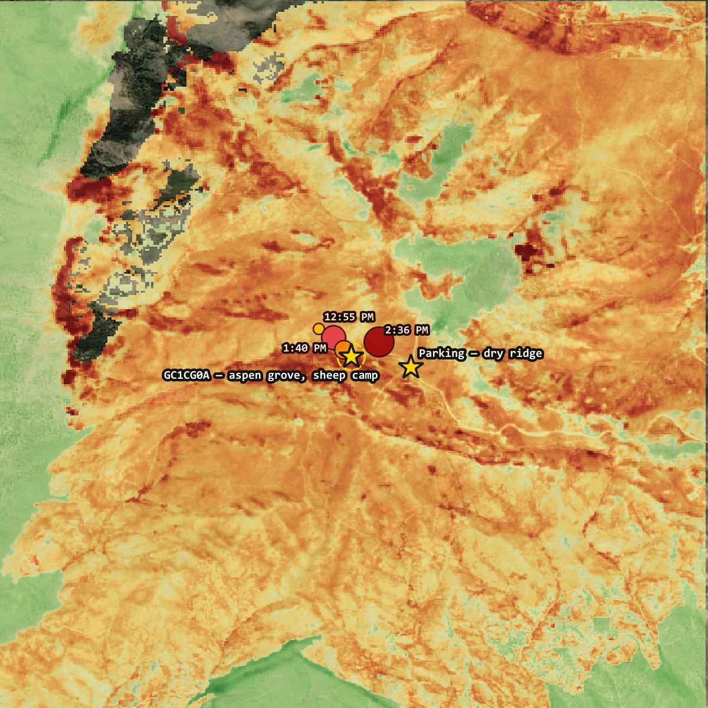

🔥 Watching a Mountain Burn
On 22 August a fire started five miles north of Reno. Ninety-two minutes later a satellite saw it burning 315 metres from a spot I marked on a map eighteen years ago. This is what I could work out about a small corner of it, from eight hundred miles away, using only free public data.
The Hawk Fire burned 15,085 acres on Peavine Peak, in the Humboldt–Toiyabe National Forest just outside Reno. It destroyed 47 homes and a commercial building, and damaged fourteen more structures. Six people were injured, three of them first responders. At its peak 42,000 residents were under mandatory evacuation, with the GO NOW zone reaching the edge of the University of Nevada campus. The governor declared a state of emergency for Washoe County and activated the National Guard.
It was 95% contained by 28 August. The cause is listed as human, still under investigation. The winter before had brought record-low snowpack, and the fire moved through cheatgrass — an invasive annual that cures early and burns fast.
One man who had lived on that mountain for over twenty years got out with his two golden retrievers and nothing else. Crews thought the line would hold; the wind changed and it came in about thirty minutes.
What follows is about a hillside, some trees, and a container I hid in 2008. It is a very small part of this fire, and it is not the important part. I am writing it because it is the part I could actually measure, and because measuring something is the only useful thing I could do from Washington State.
There is a spot on Peavine Mountain, north of Reno, where a spring comes out of a drainage and feeds a stand of aspens. Basque sheepherders camped there in the summers and carved their names into the trunks — names, dates, initials, drawings. Some of them from the 1920s.
In 2008 I hid a geocache in that grove and called it Basque Sheepherder: The High Camp. The description I wrote then says plan to spend some time checking out all the tree carvings, and calls the place a time capsule in the mountains. Sixty-three people have found it since.
On 22 August 2026 at 11:23 in the morning, someone started a fire about five miles north of Reno. By 12:55 PM — ninety-two minutes later — a thermal sensor in low Earth orbit registered it burning 315 metres from that grove.
I know that grove because I used to ride there. In the nineties I lived in downtown Reno and spent whole days climbing Peavine on a black Gary Fisher Paragon, and the aspens on the back side — the sudden green shade after hours of sagebrush and no water — were the reason to keep going over the top. I wrote about those rides here, as it happens, the same week this fire started.
I could not go there. I live eight hundred miles away and the whole area was under evacuation. So I did the only thing available, which was to point every free satellite product I know how to use at a single hillside and find out what happened to it.
The StackWhat this was built on
Total cost: nothing. No API key, no registration, no institutional access. That is worth saying out loud, because this kind of assessment used to require a federal agency's imagery contract.
Act OneWhy there was anything there to burn
Before asking what the fire did, I wanted to know why the grove existed at all. A stand of aspens at 7,574 feet in the Great Basin is not a given — the surrounding hillside is sagebrush. Something puts water there.
So I ran r.watershed over USGS elevation data and looked at flow
accumulation, which counts how many upslope cells drain through each pixel.
| Flow accumulation | Distance to channel | |
|---|---|---|
| Cache / aspen grove | 214 cells | 31 m |
| Parking area, 500 m away | 1 cell | — |
Two numbers, five hundred metres apart, and they explain the entire site. The grove sits essentially on a drainage line. The parking area sits on flat dry ridge.
The spring is why the grove is there. The grove is why the sheepherders camped there. The camping is why the carvings are there.
Hold on to that chain. It comes back in Act Four, and it does not end well.
Act TwoNinety-two minutes
VIIRS is a thermal sensor flying on two polar-orbiting satellites. Under normal circumstances it does not let you watch a fire arrive at a specific coordinate — you get a pass or two a day and a fire moves between them. Hawk moved fast enough, and the overpasses lined up well enough, that here it essentially does.
| Time (PDT) | Distance from grove | Fire radiative power |
|---|---|---|
| 11:23 AM | — | ignition |
| 12:55 PM | 315 m | first detection |
| 1:40 PM | 222 m | 216 MW |
| 2:16 PM | 79 m | 142.7 MW |
| 2:36 PM | 282 m | 230 MW |
Eighty-one minutes to close 236 metres. Fire radiative power in that range is an active flaming front, not a smoulder.
And the brightness temperature on most of those detections came back at 367 K — which is not a measurement, it is the top of the sensor's scale. VIIRS could not register how hot it actually was.
Act ThreeWhat burned
The workhorse index for burn severity is NBR, the Normalized Burn Ratio. It contrasts near-infrared against shortwave-infrared. Healthy leaves are bright in NIR and dark in SWIR, so NBR runs high; fire strips the canopy and exposes char and bare soil, which flips the relationship hard.
What you actually want is the change — dNBR, before minus after — because that isolates what the fire did from whatever the ground looked like to begin with.
NBR pre-fire +0.481 (Aug 18, four days before ignition, 0.9% cloud) NBR post-fire -0.055 (Aug 23, fire still burning, 15.1% cloud) dNBR +0.536 -> moderate-high severity RdNBR +772.8 -> in the range studies call high severity
The number that made it real to me, though, was NDVI — which just measures greenness. Two ways of sampling it, both worth stating, because they answer slightly different questions:
| 18 Aug (pre) | 23 Aug (post) | |
|---|---|---|
| Cache pixel (10 m) | 0.776 | 0.217 |
| Grove mean (150 m radius) | 0.447 | 0.090 |
The single pixel is the grove at its densest — 0.776 is closed healthy canopy, near the top of what vegetation reads anywhere. The 150 m mean is lower because the ring takes in surrounding sagebrush as well as aspen. Both collapse by roughly the same proportion, and 0.217 at the cache pixel is bare soil with scattered debris.
This was not a surface fire that ran underneath the grove and scorched some trunks on the way past. The crown went.

Act FourTerrain, or just more fuel?
Here is where it got interesting, and where I nearly published something wrong.
Same fire, same afternoon, five hundred metres apart: the grove in its drainage burned at dNBR +0.536. The parking area on the dry ridge burned at +0.126. Four times the severity.
The obvious reading is terrain. Fire runs uphill, because flames preheat the fuel above them; a drainage concentrates the front and channels its own wind up the gully. The grove sat at the top of a natural chimney. Tidy story, fits the watershed analysis from Act One, and I believed it for about an hour.
The two points did not start equal. The grove was dense aspen; the ridge was sparse sagebrush. Denser vegetation burns hotter more or less everywhere, because it has more to lose. Some unknown fraction of that 4× was never terrain at all — it was just fuel load.
A dNBR comparison between two places with different pre-fire vegetation cannot separate those two effects. Reporting it as a terrain result would have been asserting something the measurement does not support.
The fix is to hold fuel constant. Rather than comparing the grove to the ridge, compare the grove only to ground that was equally vegetated before the fire — pixels with a pre-fire NBR between 0.40 and 0.55, the same band the grove sits in. Whatever difference survives that control cannot be explained by how much fuel was standing there.
Ground with pre-fire NBR 0.40-0.55:
grove ring n = 129 mean dNBR +0.731
elsewhere in AOI n = 6,891 mean dNBR +0.453
terrain-attributable +0.278
Even against equally-fuelled ground, the grove burned harder than 79% of it — +0.731 against +0.453. That residual is not fuel load, because fuel load is what was controlled for. What is left is terrain and moisture regime.
Both effects are real and they compound. The raw 4× overstated the terrain effect; the honest figure is +0.278 dNBR.
Across the whole area, severity climbs steadily with pre-fire density — +0.344 on the sparsest ground, +0.657 on the densest. The grove sat at the intersection of both effects: the heaviest fuel on the hillside, standing in the feature that concentrated the fire into it.
Which brings back the chain from Act One, and closes it badly.
Water collects in that drainage. Water grew the aspens. The aspens were the heaviest fuel on the hill, standing in the feature that funnelled the fire to them. Every reason the grove existed is a reason it burned.

One caution on my own metaphor. The slope there is 13.3°, which is moderate. A textbook chimney is a steep narrow gully with a violent convective draft; this is a broad southeast-facing drainage near a summit. Fire running upslope with a drainage concentrating the front is the accurate description. Directionally right, but I should not oversell it.
Act FiveThe recovery curve is not good news
Aspen regenerates aggressively from root suckers after fire, so the trees will very likely come back. I set up a monitoring loop to watch it happen — a script that records NBR, NDVI and NDSI at the burned grove and at an unburned control stand every time Sentinel-2 passes over, appends a row to a time series, and publishes it. It runs daily and needs nothing from me.
My first instinct was that a rising NDVI curve would be the hopeful outcome. It is very nearly the opposite, and the reason is a detail of plant physiology I had to go and look up.
Aspen root suckering is suppressed by auxin flowing down from the living parent stem. Kill the stem and that suppression lifts — which is precisely why aspen regenerates so vigorously after fire.
The regrowth is caused by the death of the overstory. The healthier the green-up looks, the more confident you can be that the carved trunks are dead.
| Grove mean NDVI, summer 2027 | What it would mean |
|---|---|
| climbs to 0.3–0.5 | vigorous suckering — roots alive, carved stems dead |
| stays near 0.1–0.15 | roots died too — rarer, and worse |
All the figures in that table are the 150 m grove mean, the same measurement as the second row in Act Three — pre-fire 0.447, and 0.090 five days after the fire.
There is one more piece I added after the first draft, because the raw curve is harder to read than it looks. Vegetation senesces every autumn and greens up every spring whether or not it burned, so an October decline at the grove could be fire or it could just be October. Every satellite pass now also samples an unburned control stand three kilometres west — comparable aspen, dNBR +0.001, none of its pixels burned.
| NDVI, 23 Aug 2026 | |
|---|---|
| Grove (burned) | 0.090 |
| Control (unburned) | 0.548 |
| Difference | −0.458 |
Both stands get the same season, sun angle and atmosphere, so the difference isolates what the fire did. −0.458 is the finish line. Recovery is not "does NDVI go up" — spring answers that for you regardless. Recovery is whether that gap closes toward zero.
Act SixWhat the satellites can never tell me
The cache itself is a steel ammo can, which is about the best-case container for surviving a fast-moving grass and brush fire. A front like that passes in a minute or two, not hours. It is scorched almost certainly and it is plausibly still sitting there.
The carvings are a different problem entirely. They live in bark and cambium — thin living tissue, which is exactly what makes aspen carvable in the first place and exactly what gives it no defence against heat.
And no index I have can see bark. NDVI and NBR measure canopy and soil from 786 kilometres up. The carvings are millimetres deep. Every number in this piece is consistent with the carvings having survived and equally consistent with their being gone.
That question needs a person standing in the grove. Which will be me, eventually, when it is safe and open and I can get down there. In the meantime I have written to UNR's Center for Basque Studies, who catalogue Peavine's arborglyphs and may hold photographs of what was there before August.
An ammo can is replaceable. A hundred years of a vanishing culture's handwriting on a mountainside is not.
LessonsWhat I'd tell someone doing this
Control your comparison or don't make it. Two points burning differently tells you nothing if they started different. Holding pre-fire vegetation constant turned a story I liked into a number I can defend — and shrank it from 4× to +0.278.
Restrict both sides, or neither. An early version of that analysis compared an unrestricted ring against a density-restricted comparison group. RdNBR divides by the square root of pre-fire NBR, so it explodes where that value is near zero, and the ring mean came back dominated by sparse sagebrush rather than the grove. It produced a dramatic number that meant nothing.
Check the projection before differencing. Peavine sits almost exactly on the UTM zone 10/11 boundary, so it is covered by two satellite tiles. An early run differenced a scene from each — different reprojection paths for the same ground, introducing error precisely at feature boundaries like a grove edge.
Smoke can fake a snow signal. The snow index reported plausible positive values on smoky scenes. Smoke and cloud share the bright-green, dark-SWIR signature the index is built on. Masking the scene classification layer first, and reporting what fraction of pixels survived, turned three confident wrong numbers into three honest UNRELIABLE flags.
Hand-verify the formula. My first RdNBR implementation was off by a factor of about 31—a missing square root of 1000. I caught it by sanity-checking the output against published ranges rather than trusting my own refactor.
LimitsWhat this does not establish
The headline number is provisional. The only post-fire scene available when I ran this was taken while the fire was still burning at 0% containment, and both active flame and smoke distort NBR upward. It needs re-running against a clean post-containment scene.
Update, 29 August: the fire reached 95% containment on the 28th, but the satellite hasn’t yet delivered a clean look. Both passes since — 26 August, two different tiles — came back at 27% and 29% valid pixels after cloud and smoke masking, so the monitor flagged them unreliable and kept them out of the reliable set. That is exactly what the check exists to do. The provisional +0.536 stands until a clear scene arrives.
More importantly: dNBR and RdNBR are not soil burn severity. They measure surface and canopy change from above. Soil burn severity — the number that actually drives debris-flow risk — requires a field team on the ground. A site can read high on dNBR with only lightly-burned soil underneath, or the reverse.
That matters here more than usual, because of what comes next. Post-fire debris flow is usually discussed as a monsoon problem: a thirty-minute cloudburst on burnt, water-repellent soil. At 7,574 feet the bigger driver is snowmelt — no canopy to intercept it, no roots to hold the slope, and weeks of sustained meltwater rather than one storm. The grove sits 31 metres from the channel that will carry it.
And there may never be an official assessment to check my work against. BAER is a federal post-fire response, and Peavine is a patchwork of BLM, City of Reno and private land. If the burn is mostly non-federal, no official severity product may ever be published for this hillside — in which case a repository built on a laptop in Washington State is the only one that will exist.
Which is either encouraging or alarming depending on your mood, and is most of the reason I bothered.
Live dashboard, updated on every satellite pass:
bdgroves.github.io/peavine-watch
Code and data:
github.com/bdgroves/peavine-watch
The cache, still listed:
GC1CG0A
— Basque Sheepherder: The High Camp
The same mountain, thirty years earlier:
The Mountain You See Every
Day — riding Peavine out of downtown Reno in the 1990s, and the grove before
any of this
Whether the carvings survived is worth knowing, and as far as I can tell nobody else was going to check.
If you were displaced by the Hawk Fire, Washoe County emergency information and recovery resources are the place to start — not this page. Fire figures here are current to 25 August 2026 and the situation was still developing.